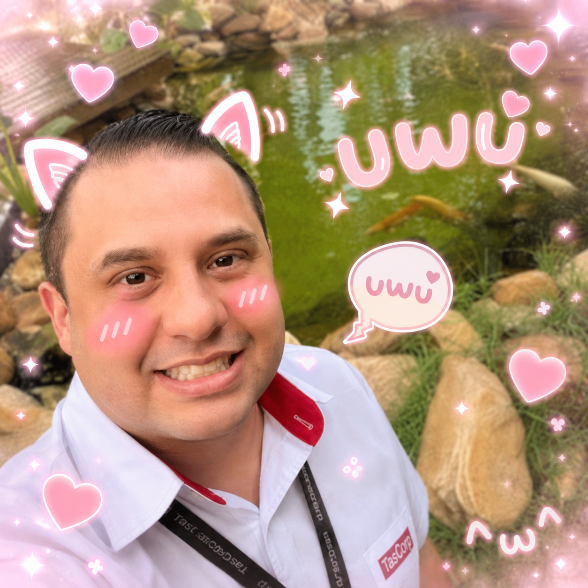
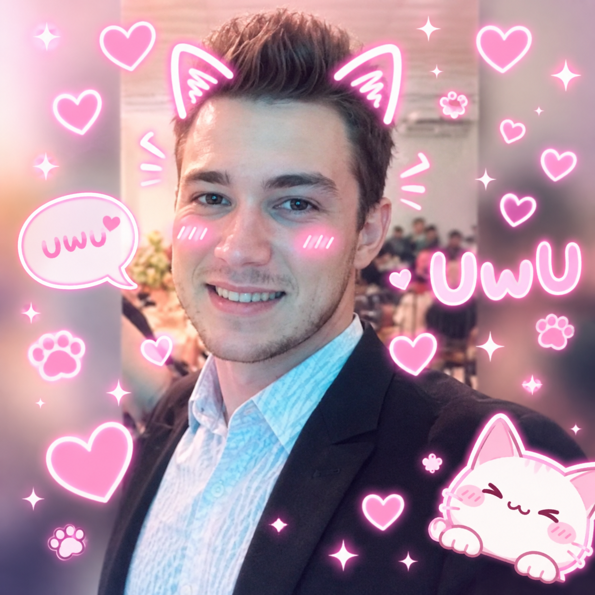
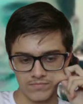

Quem Somos
Criamos mundos únicos, experiências marcantes e jogos feitos com bastante dinheiro. Nos de seu dinheiro agora atraves de nossas loot boxes.
Nossa História
A Raub Company nasceu com o propósito de criar experiências envolventes, inovadoras e precisas como um senhor de idade suíço. Ao longo dos anos, desenvolvemos métodos rigorosos de planejamento, equipes altamente sincronizadas e uma abordagem estratégica que garante resultados… do tipo que faria qualquer gerente de banco engolir seco.
Nossos projetos começam com estudos detalhados de arquitetura, rotas e padrões comportamentais — afinal, antecipar movimentos é parte essencial do nosso processo criativo. Valorizamos a discrição, a eficiência e aquela adrenalina controlada que só grandes operações oferecem.
Hoje, somos reconhecidos por executar ações coordenadas com elegância e precisão quase coreográfica. E embora muitos nos chamem de “estúdio indie”, preferimos dizer que somos especialistas em entrar, pegar o que viemos buscar — seja um conceito, um roteiro ou uma quantia simbólica — e sair antes que alguém perceba que faltou alguma coisa.
Nosso Objetivo
Criar experiências tão bem planejadas que até parecem um assalto a banco: chegamos quietinhos, fazemos o que viemos fazer e saímos com um sorriso — e, às vezes, com algo “emprestado” da imaginação alheia.
Nosso Time

Robert - Level Desing

Bruno - Balanciamento de itens
